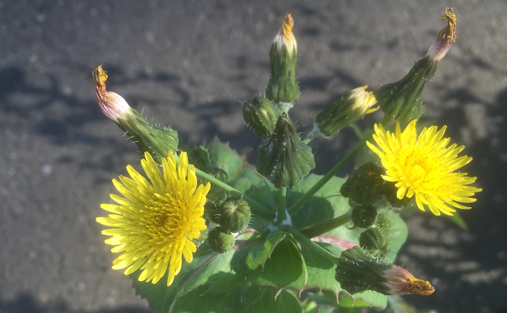

Common Sowthistle
Sonchus oleraceus, Broadleaf
Also called: common sowthistle, sow thistle, smooth sow thistle, annual sow thistle, hare's colwort, hare's thistle, milky tassel, milk thistle, soft thistle
Sonchus oleraceus is a species of flowering plant in the tribe Cichorieae of the family Asteraceae, native to Europe and Western Asia
Edible Parts
Sonchus oleraceus is a species of flowering plant in the tribe Cichorieae of the family Asteraceae, native to Europe and Western Asia
| Flowers | |
| Stem | |
| Leaves | |
| Roots |
Geography and Growth
Sonchus oleraceus is a species of flowering plant in the tribe Cichorieae of the family Asteraceae, native to Europe and Western Asia
Sonchus oleraceus is a species of flowering plant in the tribe Cichorieae of the family Asteraceae, native to Europe and Western Asia
Further Reading
- species of flowering plant in the tribe
- species of flowering plant in the tribe
- species of flowering plant in the tribe
- species of flowering plant in the tribe